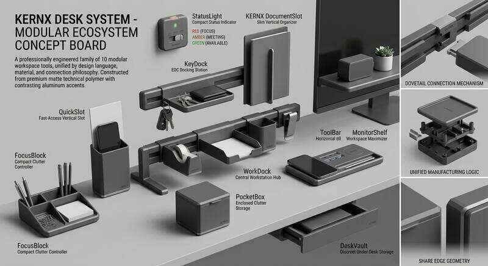

Wir entwickeln und fertigen eigene Produktsysteme für
Arbeitsplatz und Werkstatt — und fertigen Bauteile nach Ihrer Zeichnung, Ihrer CAD-Datei
oder Ihrem Muster. Ab Stückzahl 1, ohne Werkzeugkosten, aus Hannover.
Bauteile nach ZeichnungBetriebsmittelVorrichtungenErsatzteile ohne CADPrototypenKleinserienKERNX Desk SystemKERNX Werkstatt-SystemFigurenserieReverse EngineeringGewindeeinsätzeBauteile nach ZeichnungBetriebsmittelVorrichtungenErsatzteile ohne CADPrototypenKleinserienKERNX Desk SystemKERNX Werkstatt-SystemFigurenserieReverse EngineeringGewindeeinsätze
01 — Eigene Produkte
Drei Systeme, die uns gehören.
Nicht heruntergeladen und nachgedruckt: selbst konstruiert, selbst gezeichnet,
selbst gefertigt. Dieselbe Sorgfalt gilt für Ihre Bauteile.
DS-01

KERNX Desk System
Modulares Ordnungssystem für den Arbeitsplatz. Eine Schiene unter der Tischplatte, daran alles Weitere — werkzeuglos umsteckbar.
Das Werkstatt-System besteht aus Lagerboxen in drei Größen, einer Universalschiene
und Werkzeughalter-Modulen. Alles steckt werkzeuglos, alles lässt sich später ergänzen —
und wenn eine Box fehlt, drucken wir sie nach, statt ein neues Set zu verkaufen.
Genau das ist der Punkt bei additiver Fertigung: ein System, das mitwächst,
statt eines, das man komplett ersetzt.
Nicht „3D-Druck" als Technik, sondern die konkreten Fälle aus Produktion,
Instandhaltung und Konstruktion.
M.01
Bauteil ohne Zeichnung
Sie haben nur das defekte Teil. Wir nehmen es auf, rekonstruieren die Geometrie und fertigen den Ersatz.
M.02
Betriebsmittel
Montagehilfen, Aufnahmen, Lehren und Prüfvorrichtungen für den internen Einsatz — ohne Bauteilzertifizierung.
M.03
Halter und Abdeckungen
Sensorhalter, Kabelhalter, Gehäuse und Schutzabdeckungen, angepasst an die echte Einbausituation.
M.04
Prototyp und Vorserie
Funktionsmuster, bevor ein Spritzgusswerkzeug beauftragt wird. Ab Stückzahl 1, ohne Werkzeugkosten.
M.05
Kleinserie
20, 80 oder 400 Teile — ohne Mindestmenge und ohne Rüstkosten für ein Werkzeug.
M.06
Eigene Produktsysteme
Desk System, Werkstatt-System und Figurenserie: entwickelt, gezeichnet und gefertigt im eigenen Haus.
M.07
Verpackung und Einlagen
Transportschutz, Sortiereinlagen und Aufnahmen für Koffer und Kisten.
M.08
Bauteile nach Datei
STEP, STL oder Zeichnung genügt. Wir prüfen die Machbarkeit und melden Bedenken schriftlich an.
02 b — Abgrenzung
Konkret benannt: Produkte, Werkstoffe, Grenzen.
„3D-Druck“ ist ein Verfahren, kein Gewerk. Entscheidend ist, was damit
hergestellt wird und woraus. Deshalb nennen wir es hier ausdrücklich — statt uns
hinter einer allgemeinen Formulierung zu verstecken.
Das fertigen wir
Kunststoffteile mit klarer Funktion
Halter, Clips, Gehäuse und Schutzabdeckungen
Vorrichtungen, Montagehilfen und Lehren für den internen Gebrauch
Transportschutz, Sortiereinlagen und Koffer-Aufnahmen
Prototypen und Funktionsmuster vor dem Serienwerkzeug
Ersatzteile aus Kunststoff nach Muster, wo kein Nachbau geschützter Rechte entsteht
Eigene Produktsysteme: Desk System, Werkstatt-System, Objekt- und Figurenserie
Daraus fertigen wir
Vier Thermoplaste, FDM / FFF
PLA — formstabil, maßgenau, für Modelle und Innenanwendungen
PETG — zäher und feuchtigkeitsbeständiger, Standard für Funktionsteile
TPU — flexibel und abriebfest, für Puffer, Griffe und Kantenschutz
Toleranz ohne gesonderte Vereinbarung: DIN EN ISO 2768-c
Kein Metall, keine Keramik, kein Faserverbund, kein Harz
Das fertigen wir nicht
Wo ein zugelassener Betrieb hingehört
Bauteile für Bauwerke oder tragende Konstruktionen
Präzisions- und Funktionsbauteile für Maschinen und Anlagen, die dem
Feinwerkmechaniker-Handwerk zuzuordnen sind
Industrieformen und Werkzeuge für die Serienfertigung
Sicherheitsrelevante, druck- oder lastführende Bauteile
Medizinprodukte und Bauteile für Fahrzeuge im öffentlichen Verkehr
Nachbildungen geschützter Marken, Figuren oder Designs
Warum diese Liste hier steht: Eine reine Negativformulierung („soweit keine Genehmigung
erforderlich ist“) sagt nichts darüber aus, was tatsächlich hergestellt wird. Wir benennen
deshalb Produkt, Werkstoff und Grenze im Klartext — für Auftraggeber genauso wie für die Kammern.
Der Fall, der sich lohnt
Kein Ersatzteil mehr am Markt?
Viele Betriebe betreiben Anlagen, deren Hersteller das Teil nicht mehr liefert —
und für die es keine CAD-Daten gibt. Übrig bleibt das defekte Bauteil auf dem Tisch.
Aufnehmen
Wir nehmen das Bauteil vor Ort oder bei uns auf und erfassen die maßgebenden Geometrien.
Rekonstruieren
Daraus entsteht ein sauberes Modell — mit den Anpassungen, die die Einbausituation verlangt.
Fertigen
Erstteil, Maßkontrolle, Freigabe. Danach jederzeit nachbestellbar, ohne neue Kosten.
Warum das kein Anbieter aus dem Ausland macht: Es verlangt den physischen Zugriff auf das
Bauteil und ein Gespräch über die Einbausituation. Genau dort liegt unser Vorteil — wir sind in Hannover.
Rechtlicher Hinweis: Bei Nachfertigungen bestätigt der Auftraggeber, dass keine Rechte
Dritter entgegenstehen. Eine Schutzrechtsprüfung führen wir nicht durch.
03 — Ablauf
Von der Datei zum Bauteil.
Fünf Schritte, mit schriftlicher Machbarkeitsprüfung vor der Fertigung.
01 — Anfrage
CAD-Datei, Zeichnung, Foto oder das Musterteil selbst. Eine kurze Beschreibung des Einsatzzwecks genügt.
01
02 — Machbarkeit
Wir prüfen Geometrie, Wandstärken, Belastung und Material — und melden Bedenken schriftlich, bevor gefertigt wird.
02
03 — Angebot
Festpreis je Teil mit Rüstpauschale, Materialangabe, Toleranzklasse und verbindlicher Lieferzeit.
03
04 — Fertigung
Druck, Nachbearbeitung und Maßkontrolle. Gewindeeinsätze aus Messing setzen wir auf Wunsch ein.
04
05 — Übergabe
Abholung in Hannover oder Versand. Bei Serien liegt ein Maßprotokoll der Erstteile bei.
05
04 — Technische Daten
Was wir zusagen — und was nicht.
Wir nennen unsere Grenzen offen. Ein Angebot, das mehr verspricht als die Anlage
leisten kann, kostet beide Seiten Zeit.
Merkmal
Beschreibung
Wert
Verfahren
Additive Fertigung, FDM / FFF
FDM
Bauraum
Einteilig bis 256 × 256 × 256 mm
256³ mm
Schichthöhe
Je nach Anforderung an Oberfläche und Festigkeit
0,08 – 0,28 mm
Düse
Standard 0,4 mm; gröber für schnellere Funktionsteile
Formstabil und maßgenau, sehr gute Oberfläche. Modelle, Vorrichtungen, Innenanwendungen.
verfügbar
PLA-Matte
Wie PLA, mit matter Oberfläche für Sicht- und Präsentationsteile.
verfügbar
PETG
Zäher und temperaturstabiler als PLA, beständiger gegen Feuchtigkeit. Standard für Funktionsteile.
verfügbar
TPU
Flexibel und abriebfest. Dichtungen, Puffer, Kantenschutz, Griffe.
verfügbar
Derzeit nicht im Angebot
ABSASAPCPA / NylonCarbon- und Glasfaser
Warum diese Grenze: Unsere Anlagen sind offen aufgebaut, ohne beheizte Bauraumkammer.
Hochtemperatur- und faserverstärkte Werkstoffe lassen sich damit nicht prozesssicher verarbeiten.
Wir sagen das vorher, statt ein Bauteil zu liefern, das im Einsatz versagt.
05 — Aus der eigenen Fertigung
Alles auf diesen Bildern kommt von uns.
Eigene Konstruktionen und eigene Aufnahmen. Keine Renderings fremder Anbieter,
keine fremden Vorlagen.